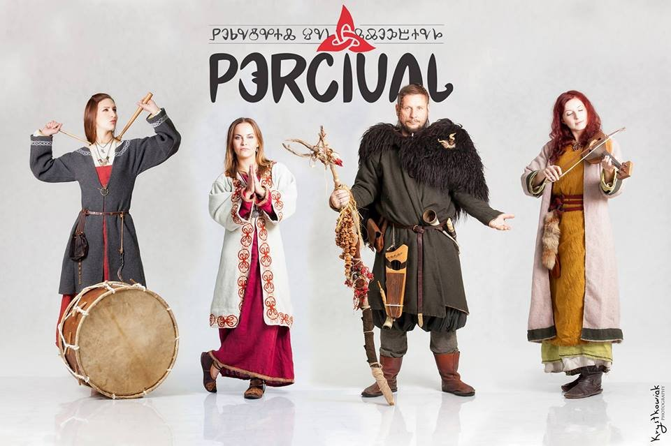

Soundtrack z gry
Przy tworzeniu jej współpracowali Marcin Przybyłowicz, Mikołaj Stroiński i zespół Percival Schuttenbach. Czerpiemy ze słowiańskiego charakteru Europy Środkowo-Wschodniej, kultury celtyckiej, szkockiej czy skandynawskiej - tłumaczył Przybyłowicz w wywiadach. Dodatkowo autorzy mogli czerpać do woli z całej dyskografii Percivala. Niektóre istniejące już kompozycje zespołu zostały poddane nowym zabiegom aranżacyjnym i powtórnie wykorzystane.
Cały czas w muzycznym świecie "Wiedźmina" rządzi szeroko pojęty folk. Inspiracje podczas tworzenia były dużo szersze. W soundtracku do gry wykorzystano także elementy znanych dzieł popkultury (np. seriali), wrócono również do muzyki z wcześniejszych części, aby podkreślić, że "Wiedźmin 3: Dziki Gon" jest spoiwem całej trylogii.
Tutaj zamieszczam kilka utworów:
| Z gier | |
|---|---|
| Wilcza zamieć | |
| Srebro na potwory | |
| Aen Seidhe | |
| The Trail | |